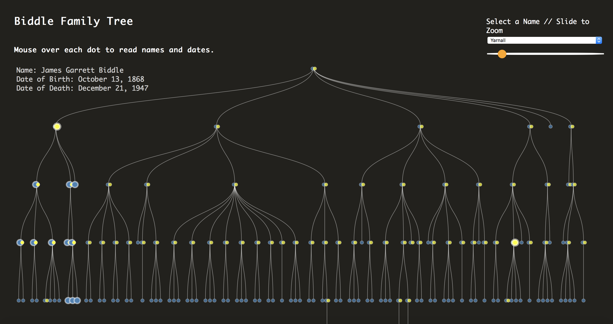
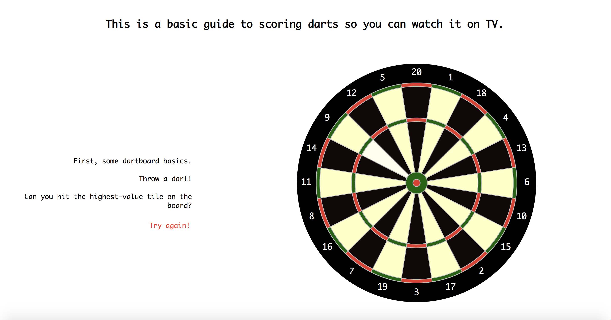

Project 1
Project 2

This family tree approaches “exploratory viz” from a highly specific
perspective. I expect it will be a useful or interesting exploratory
tool mainly just for those who are part of the specific subset of my
family that exists on this tree. One of my main goals in this project
was to make a custom tree that didn’t just remake the default settings
of sites like Ancestry, but rather one in which the design decisions and
features reflect some of the questions I want to ask and explore in a family.
One of these is an exploration of how names arrive on and disappear from
the tree — it’s particularly relevant since the tree is called the Biddle
Family Tree, and Biddle hasn’t been given as a last name in this family since
1906, when the last of five Biddle sisters was born. Their brother, who might
have preserved the name, died at the age of 9. We don’t seem to want to forget
that name, though — there are 17 people on the tree with the middle name Biddle!
Data is sourced from a GEDCOM file exported from a family tree maintained by one of my
family members on Ancestry.com. GEDCOM is a powerful format, but basically unusable as
far as D3 is concerned, so I parsed the file in Python using this
GEDCOM
parsing module, and used D3.stratify to turn the CSV back into a hierarchical JSON file.

This darts-inspired project stems from my discovery a couple years ago that darts
is actually an extremely entertaining TV spectacle. In a desire to make a beginner’s-guide
to watching darts on TV, I created visualizations that explain how a dartboard is
scored, as well as how the gameplay of a darts match proceeds. Along the way, we also
learn about some of the top darts players, and view a bit of darts TV culture with some
exciting darts moments.
Data are sourced from
Darts Database and this
Darts Info World
checkout table.
I cleaned the data by hand in Excel.
Click
here to view
Project 1 code, sketches, and mockups on Github, and
here
for the same materials for Project 2.
R e f l e c t i o n
Major design decisions:
I knew that I wanted my darts visualization to be driven by the dartboard itself, since
the board is already a way of representing point values visually. Larger polygons correspond
to fewer points available, and (as I discovered upon making a heat map) the black and red
polygons are all worth more than the white and green polygons. It took me a while to reconstruct
the dartboard in a data-driven way, and I suspect there’s probably a much more elegant way to
do it, but in the end, constructing concentric annulus charts allowed me to create the exact
graphic of a dartboard.
I took my color scheme from images of classic dartboards I found online and chose a font
that has a nerdy/numerical/old school feeling. I ended up applying the font to my whole
project, feeling that it works pretty universally for what I’m going for, but the initial
impetus was a darts-compatible font.
After getting feedback from the class, I added a hover element that highlights each dartboard
polygon on mouseover and changed the color of the text tooltip to red to make it more obvious
what the click-event was. These changes, plus finally getting numbers to show up on the
dartboard, definitely help to make the UI more intuitive.
Major challenges:
One of the most interesting, and lingering, questions for me was when an ideological
challenge intersected with a technological challenge. Paradoxically, I found in Project
1 that creating my own tree gave me simultaneously more and fewer options when it came
to customizing my visualization. My original goal was to get away from some of the
rigid, gendered hierarchy that trees like those on the Ancestry website seem to rely
on. Re: gender, I was definitely able to do that by not assigning colors or listing
sex/gender on my site, essentially creating a genderless family tree.
When it came to the structure, however, it became clear that my dataset would have
to stick rigidly to the parent-child format that D3.stratify requires. What ended
p being most important about this family structure, data-wise, is not a male/female
binary, but a direct descendant/partner binary. Ultimately, the only way to get the
tree to work using D3.stratify/ D3.hierarchy and D3.tree was to make sure that each
child node had only one parent node. That’s obviously not how human reproduction or
families work. Of particular interest to me is that it fails to accurately represent
human relationships if and when the tree is large enough to contain any degree of
intermarriage within the extended family. In the case of this tree, there’s one
instance of intermarriage between second cousins, and indeed the tree gets a bit
weird there. The old-school paper solution to intermarriage on a family tree is
to finagle the relevant branches next to each other and “graft” the tree back
together. But D3.stratify demands that each branch remain separate, so there are
7 cloned people on this family tree. (I’m one of them!)
While it may not seem like a relevant problem to most, it begs the question—like
any other individual reality of human existence that ends up being called
“messy data”—whose realities are worth taking the time to represent and whose
are not. I’ve not faced adversity or had anyone doubt my humanity for my parents
being second cousins. If I had, it might be much more important to me that I
could make a tree that represented that truth without distorting it or forcing
it to conform to someone else’s idea of what a family is allowed to be. One
solution in this case would be to use a network structure, bringing me to
the poetic conclusion is that with a wide enough scope, all families have to
become networks rather than hierarchies. Another more broadly applicable solution
is to acknowledge the limitations of any one visual form, appreciate the
visualization for what it can show, and keep asking what or who is left un-visualized.
More time / resources:
With more time and resources, I would improve the code for my dartboard graphics. I
just realized in the couple few days that I can create a unique ID for the path of
each dartboard polygon, and/or assign the point value to the path directly. This
seems like a way to shorten a lot of my code and make it less roundabout. I was able
to make my dartboard checkout feature (the final chart) work with just a few lines
of code to select based on this ID.
I’d also like to make more charts about the television aspect of the game – I think
my initial scope was too large, and just creating the graphics to demonstrate how a
dartboard works and is scored ended up taking a huge amount of work for me. I
enjoyed the challenge, but did have to give up on some of the darts content I had
planned to include here that gets at why televised darts can be a uniquely entertaining
experience even for those who don’t enjoy watching sports (like more information about
the player and their walk-on music, for example).
I’m also really impressed by the scroll effects that other members of the class have
used, and the extent to which that impacts the narrative flow of the page. Learning
how to implement a CSS grid and digging into customizing my CSS ended up being plenty
of new information for me on this go round, but I definitely look forward to trying
out scroll effects in the future. Most of all, I’m excited to have the tools and
setup to actually do that!